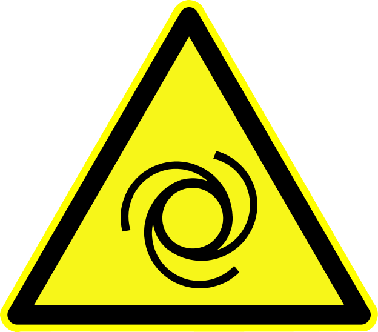
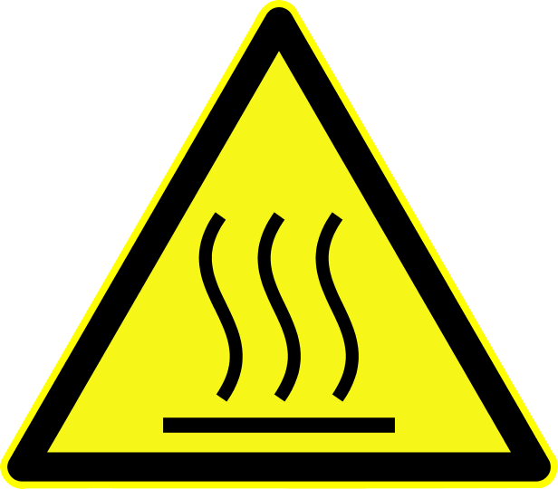

The vessel is powered by a marine diesel engine driving a fixed propeller through a reversing marine gearbox. The entire propulsion drive-train is flexibly mounted and well isolated.
The vessel is equipped with a four cylinder, water-cooled, diesel engine fitted with a dry exhaust system. Waste heat from the main engine is used to charge the ship's thermal buffer.
| Make | Deutz | |
| Type | BF4M 1013MC | |
| Engine number | ||
| Power rating (kW (hp)) | ||
| Cooling | Water (indirect) | |
| Engine controls | Cable | |
| Trolling system | Electrical |
 Take care to perform the necessary routine maintenance.
Take care to perform the necessary routine maintenance.
 Remove the key from the helm engine panel before working on the engine.
 The engine becomes hot during operation and remains hot afterwards.
 [deut1]
[deut1]
The main engine instrument and control panel is located at the helm.

To start the engine:
Ensure that the helm lever control is in neutral and the throttle at the tick-over position.
Insert the key in the ignition switch and rotate clockwise to position I (RUN). The 'panel ready' (green), 'low oil pressure' (red) and 'charge failure' (red) warning indicators will illuminate and the associated audible alarm will sound.
Turn the ignition key clockwise against its spring to position II (START) and hold to crank the engine. Release the key as soon as the engine starts or (if the engine fails to start) after five seconds.
If the engine failed to start repeat step (3). If the engine repeatedly fails to start there is a fault: consult the engine user manual.
When the engine starts the low oil pressure and charge failure warning lights should extinguish and the audible alarm should silence. If this fails to happen, there is a fault: consult the engine user manual.
Allow the engine to warm up for a few minutes before operating under load.
To stop the engine:
Ensure that the helm lever control is in neutral and the throttle at the tick-over position.
If the engine has been under heavy load, allow it to run at tick-over for a few minutes to cool.
Press the engine panel STOP button.
Wait for the engine to stop. The low oil pressure and charge failure warning lights will illuminate and the audible alarm will sound.
Turn the ignition key to position 0 (OFF).
 To avoid damage to the engine alternator never stop the engine by simply turning the ignition key to position 0.
To avoid damage to the engine alternator never stop the engine by simply turning the ignition key to position 0.
 Engine speed is controlled by the combined throttle/gear lever which operates through control cables: if the engine speed or gears cannot be changed then in the first instance check for a broken cable.
Engine speed is controlled by the combined throttle/gear lever which operates through control cables: if the engine speed or gears cannot be changed then in the first instance check for a broken cable.
The main engine operates at 24VDC. Two series-connected 120Ah 12VDC cranking batteries are installed on the port side of the engine room with an adjacent battery isolator switch, split-charge module and dedicated 24VDC battery charger which is energised only when the ship is connected to shore or generator supply.
The main engine alternator provides up to 140A of charging current to both the engine starter batteries and the domestic battery bank through the split charge system.
The vessel has a dry exhaust system routed through a silencer and discharging through the transom.
The exhaust system is thoroughly insulated against heat loss, but caution must be exercised when moving around the engine room during or shortly after operation of the main engine.
The main engine is indirectly cooled through an immersed heat exchanger located in a protected cavity at the port side of the hull.
The heat exchanger can be serviced from the engine room without the need for lift-out or dry-docking. A subsidiary primary cooling circuit is used to heat the ship's thermal buffer through a heat transfer coil.
The primary cooling circuit is pumped by a mechanically driven engine mounted impeller.
The exposed cooling circuit pipework becomes hot during engine operation.
 [blok2]
[blok2]
The vessel is equipped with a conventional marine reduction gearbox mounted directly to the rear of the main engine. Gearbox lubrication is separate from the main engine, but uses the same type of lubricating oil.
The gearbox supports an electrically selectable and operated trolling mode and provides a permanent power take off (PTO) for the ship's hydraulic system.
| Make | PRM | |
| Type | 500 | |
| Reduction ration | 2:1 | |
| Gearbox number | ||
| Gearbox controls | Cable (fwd/rev/troll) and electrical (troll enable and operate) |
 Take care to perform the necessary routine maintenance.
Take care to perform the necessary routine maintenance.
Remove the key from the helm engine panel before working on the engine.
The trolling system supports low speed maneuvering by allowing the propeller speed to be decoupled from engine rpm through an electrically operated hydraulic clutch. The system only operates when engine revs are below 1000rpm and is enabled by the helm TROLL switch. A joystick at the helm allows proportional control of gearbox slip and hence shaft rpm.
The output of the vessel's gearbox is coupled to the propeller shaft by a flexible coupling which reduces vibration and eliminates the need for precise engine alignment. The propeller shaft exits the vessel through a conventional stuffing-box with automatic shaft lubrication.
The shaft seal is a standard marine stuffing box with double sealing.
| Make | ||
| Type |
 The stuffing material requires periodic replacement.
The stuffing material requires periodic replacement.
 [blok1]
[blok1]
The primary shaft lubrication system is electrically driven and operates under the control of a scheduler implement under the vessel's Signal K server. The scheduler is configured to operate when the ignition switch is in position I (RUN) and operates for 2 minutes initially and then for 30 seconds every 60 minutes subsequently. The lubrication schedule will also start if the stern gland temperature exceeds a programmed default value of 60C.
If the automatic lubrication system fails, a conventional manual lubrication cup can be used to ensure that the shaft can be operated safely.
| Make | ||
| Type | ||
| Grease |
 Regularly check grease levels and top-up as necessary.
Regularly check grease levels and top-up as necessary.
 MANUAL NOT SUPPLIED
MANUAL NOT SUPPLIED
The steering system is hydraulically operated. Turning the ship's wheel operates a helm pump which pumps fluid through pipework to twin steering cylinders connected to a quadrant on the rudder.
When the ship's main engine is running, power from the ship's hydraulic system is used to augment the manual steering, significantly reducing steering effort.
Steering assistance is implemented through an 'orbitrol' valve which opens when the wheel is turned, allowing the hydraulic system to effect rudder cylinder action. Assisted steering is only available when the main engine is running.
In the unlikely event of the hydraulic steering system failing the rudder can be operated manually through use of an emergency tiller. To use the emergency tiller:
Open the hatch over the aft centre deck locker to gain access to the tiller and rudder shaft.
Fit the tiller to the top of the rudder shaft
Open the bypass valve connecting the two hydraulic steering cylinder
Move the tiller to position the rudder
 Steering using the tiller is only possible at low speeds - one person should operate the tiller and another the engine controls.
Steering using the tiller is only possible at low speeds - one person should operate the tiller and another the engine controls.
 Keep the locker housing the tiller and rudder shaft clear of obstructions so that in an emergency the tiller can be installed easily.
Keep the locker housing the tiller and rudder shaft clear of obstructions so that in an emergency the tiller can be installed easily.